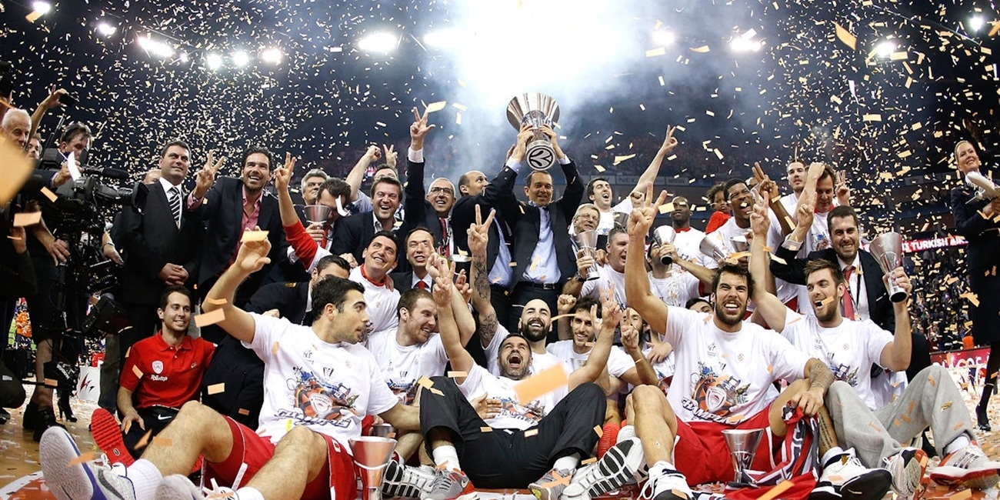
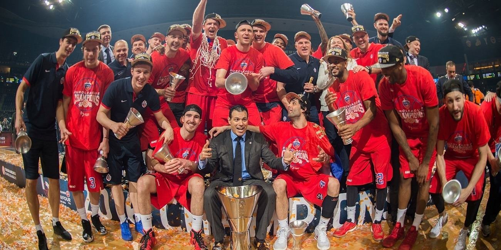
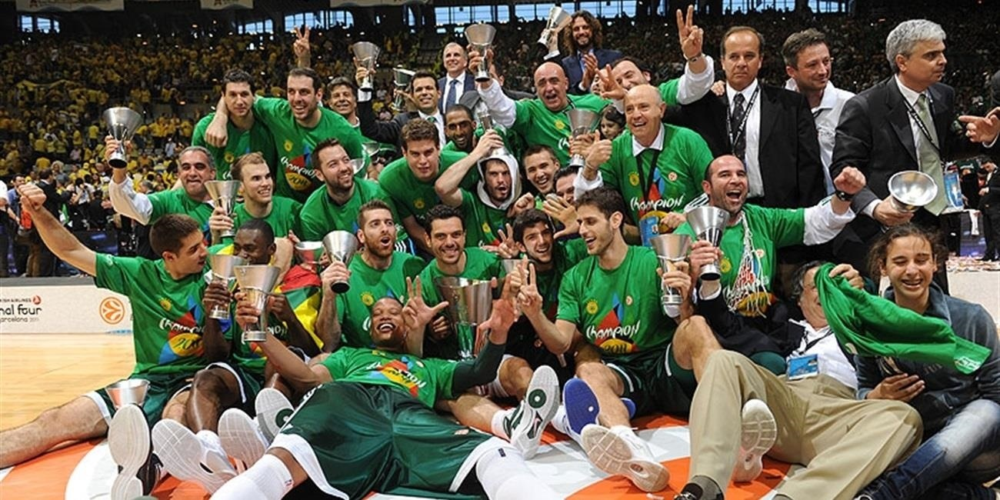
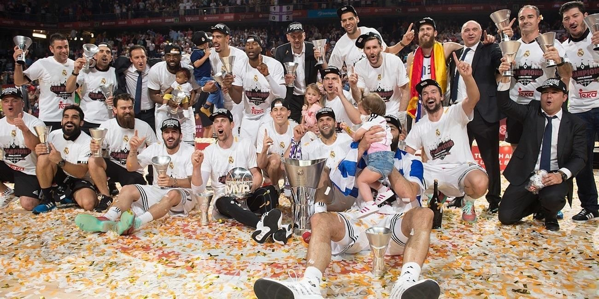

The FIBA European Champions Cup was originally established by FIBA and it operated under its umbrella from 1958 until the summer of 2000, concluding with the 1999–00 season. That was when Euroleague Basketball was created.
FIBA had never trademarked the "EuroLeague" name, even though it had used that name for the competition since 1996. Euroleague Basketball simply appropriated the name, and since FIBA had no legal recourse to do anything about it, it was forced to find a new name for its championship series. Thus, the following 2000–2001 season started with 2 separate top European professional club basketball competitions: the FIBA SuproLeague (previously known as the FIBA EuroLeague) and the brand new Euroleague 2000–01 season. The rift in European professional club basketball initially showed no signs of letting up. Top clubs were also split between the two leagues: Panathinaikos, Maccabi Elite, CSKA Moscow and Efes Pilsen stayed with FIBA, while Olympiacos, Kinder Bologna, Real Madrid, FC Barcelona, Tau Cerámica and Benetton Treviso joined Euroleague Basketball.
In May 2001, Europe had two continental champions, Maccabi of the FIBA SuproLeague and Kinder Bologna of the Euroleague. The leaders of both organizations realized the need to come up with a unified competition. Although only a year old, Euroleague Basketball negotiated from a position of strength and dictated proceedings. FIBA essentially had no choice but to agree to Euroleague Basketball's terms. As a result, European club competition was fully integrated under Euroleague Basketball's umbrella and teams that competed in the FIBA SuproLeague during the 2000–01 season joined it as well.
In essence, the authority in European professional basketball was divided over club-country lines. FIBA stayed in charge of national team competitions (like the FIBA EuroBasket, the FIBA World Cup, and the Summer Olympics), while Euroleague Basketball took over the European professional club competitions. From that point on, FIBA's Korać Cup and Saporta Cup competitions lasted only one more season before folding, which was when Euroleague Basketball launched the ULEB Cup, now known as the EuroCup. In November 2015, Euroleague Basketball and IMG agreed on 10-year joint venture.
|  |  |
|  |  |